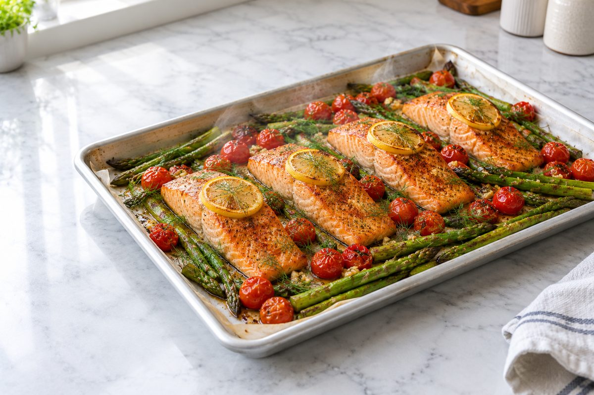
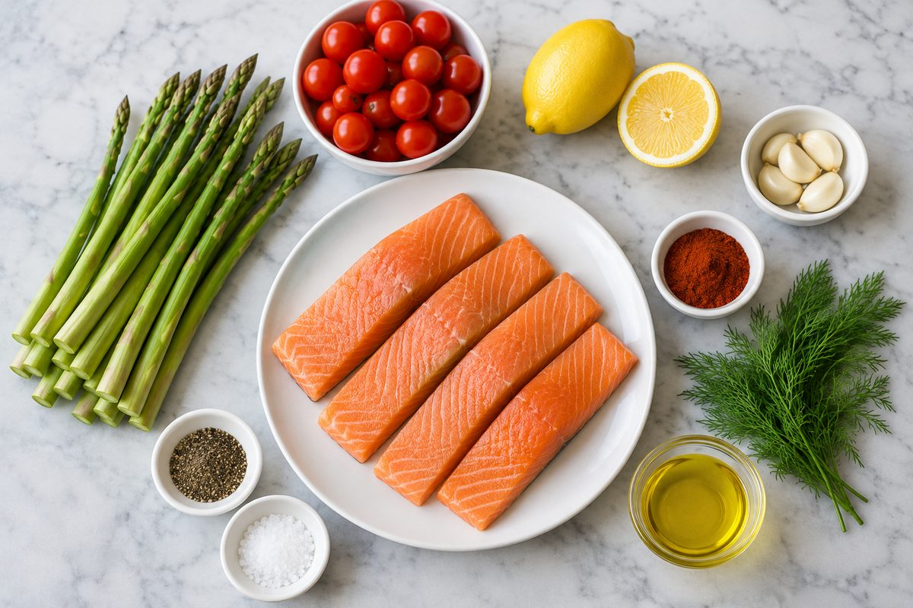
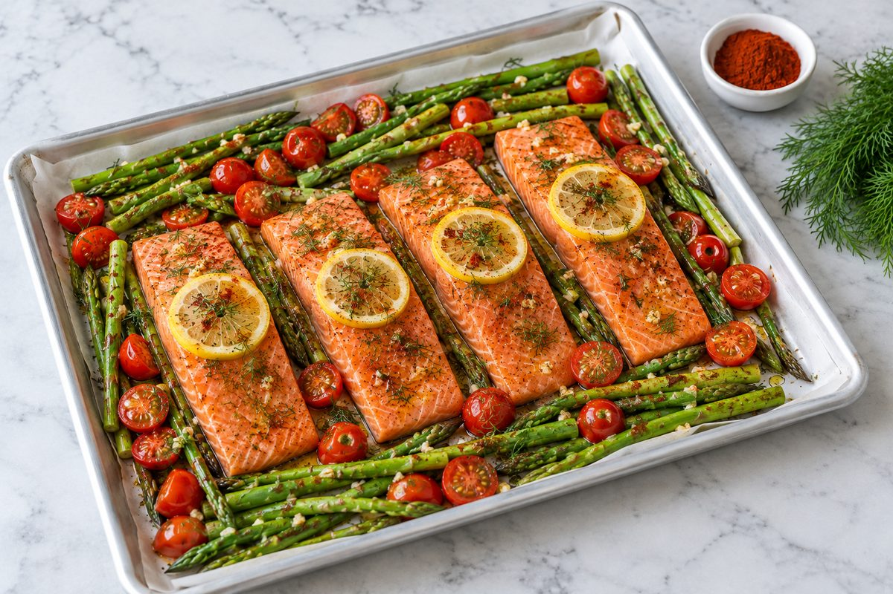
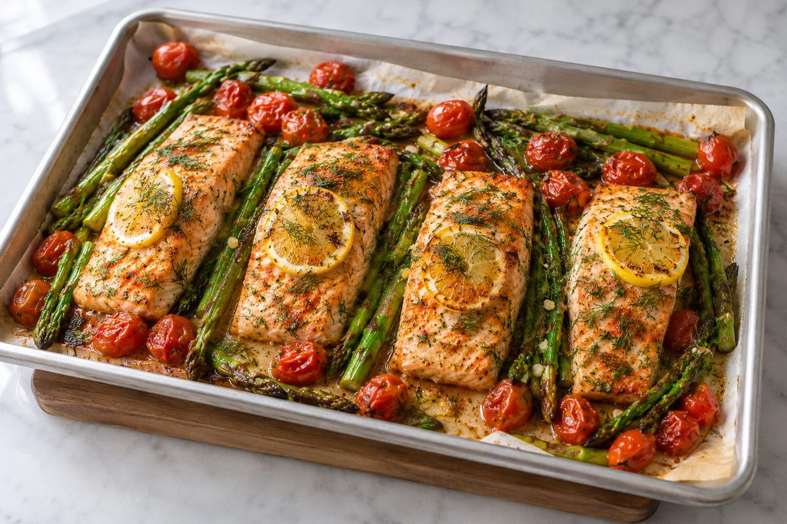
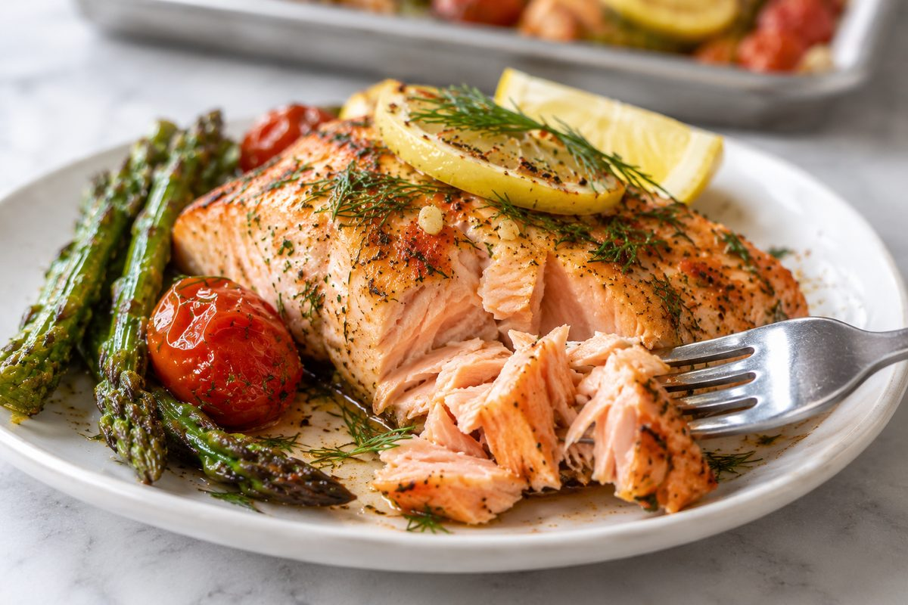
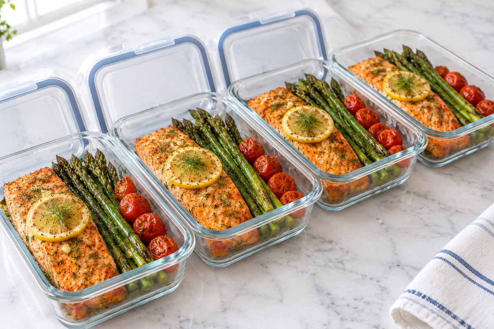

Lemon Dill Sheet Pan Salmon & Veg
Estimated per serving: 1 salmon fillet plus one quarter of the vegetables. Values come from standard nutrition database figures for farmed Atlantic salmon and vary with fillet size and brand.

One pan, four fillets, and a full dinner in about 30 minutes. The salmon roasts on top of a bed of asparagus and cherry tomatoes, so the vegetables cook in the salmon's juices and the olive oil, and there is only one tray to wash afterwards.
A thin slice of lemon on each fillet does two jobs: it protects the top of the salmon from drying out, and it perfumes the fish as it bakes. Fresh dill, garlic and smoked paprika do the rest, so you don't need a sauce.
Don't overcook it: salmon goes from perfect to dry in a couple of minutes. Take the pan out as soon as the fish flakes easily with a fork. It carries on cooking a little while it rests.
Ingredients

- 4 skinless salmon fillets (about 5 oz / 140 g each)
- 1 lb / 450 g asparagus (1 large bunch), woody ends trimmed
- 10 oz / 300 g cherry tomatoes (about 1 pint)
- 2 tbsp / 30 ml olive oil
- 4 cloves garlic, minced
- 1.5 tsp smoked paprika
- 2 tbsp chopped fresh dill, plus a few sprigs to finish
- 1 lemon, 4 thin slices for the salmon, plus 1/2 lemon for squeezing
- 1/2 tsp salt
- 1/2 tsp ground black pepper
Notes for UK and European cooks
- Oven: 425°F is 220°C, or 200°C in a fan oven (gas mark 7).
- Sheet pan: this is a large baking tray in the UK and Europe. Parchment paper is called baking paper.
- Asparagus: it is cheapest in season. At other times, swap in tenderstem broccoli or green beans, which roast in the same time.
- Allergens: contains fish. None of the other ingredients are among the 14 major allergens listed in the EU, but check the labels on spices.
- Budget tip: frozen salmon fillets are often cheapest at discount supermarkets such as Aldi and Lidl. Thaw them overnight in the fridge and pat them dry before cooking.
Instructions
- Preheat the oven to 425°F / 220°C (200°C fan, gas mark 7). Line a large sheet pan (baking tray) with parchment paper (baking paper). Pat the salmon dry with paper towels.
-
Spread the asparagus and cherry tomatoes over the pan, leaving four spaces for the fish, and set the fillets on top or between them. Drizzle everything with the olive oil, then sprinkle the paprika, garlic, chopped dill, salt and pepper over the salmon and vegetables. Rub the seasoning into the fillets and turn the vegetables to coat them. Lay a lemon slice on each fillet.

Ready for the oven. Leave a little space between the pieces so they roast instead of steam. -
Roast for 12 to 15 minutes, until the salmon is opaque and flakes easily and reaches 145°F / 63°C, the asparagus is tender with lightly browned tips, and the tomatoes have started to blister.

Out of the oven: flaky salmon, tender asparagus and blistered tomatoes. - Squeeze the half lemon over the pan, scatter the dill sprigs on top, and let everything rest for 2 minutes.
-
Serve one fillet with a quarter of the vegetables and spoon over the juices from the pan.

The salmon should flake apart in moist pink layers. -
To meal prep, let the pan cool for 20 minutes, then divide the salmon and vegetables across 4 containers and refrigerate within 2 hours.

Four dinners or lunches, ready for the next couple of days.
Storage and Reheating
- Fridge: US guidance is up to 3 to 4 days at or below 40°F / 4°C. UK guidance is shorter: the Food Standards Agency advises eating leftovers within 2 days. For meal prep, plan to eat the salmon in the first 2 days and freeze the rest.
- Freezer: up to 2 months. Thaw overnight in the fridge.
- Reheat gently: warm in a microwave at medium power for 1 to 2 minutes, or in a 275°F / 135°C oven for 10 minutes, until hot all the way through. High heat dries salmon out. It is also very good served cold on a salad.